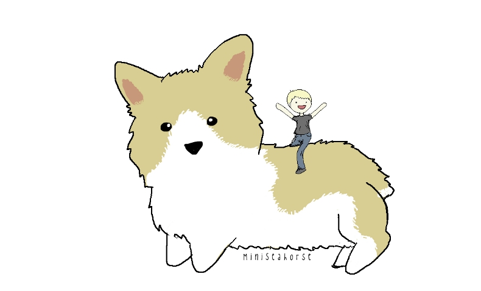

After many years away from home the nameless old man and his dog went on countless side adventures. The man never had to worry about having some nice kicks on his feet as he had his magical cobbling tools and skills passed down to him through the generations. At times of exhaustion, Dogdog would grow to many times his size and allow the old man to ride him as well, this helped as the old man suffered from mild arthritis in his hip.
Finally, after years of searching and investigating rumors of the epic store, they believed that they had found it...
Epic Shoe Store 